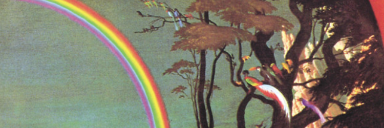

"Built (almost) from scratch with HTML, CSS, and JavaScript, hosted on Github and Neocities."
sweetfish.site - "My largest inspiration for this website is a random site from Neocities"
wikimedia commons - "Used for some banners and images"
Font - "The font used for this site is Chicago FLF."